在VUE项目中使用TypeScript–实践
何为TypeScript
TypeScript 是 JavaScript 的一个严格超集，主要提供了类型系统和对 ES6 的支持，它由 Microsoft 开发，代码开源于 GitHub 上。
为何使用TypeScript
TypeScript最吸引人的地方莫过于它的静态类型系统，JavaScript是弱类型语言这点相信很多人都知道，弱类型的意思大概是一个变量不用经过强类型转换就能赋予任何类型的值。这是JavaScript的优点，在开发小型系统的时候就能够有较快的开发效率，但在开发中大型系统的时候，尤其是需要精确数据类型的系统，弱数据类型就成为了它的弱点。在后期的维护和新人加入开发阅读代码时就显得比较困难，因为变量的类型难以推断。TypeScript就有这样的一个效果，通过编译进行静态类型检查，一旦发生变量被赋予的值类型与你定义的类型不一致，在检查阶段就能够发现进而减少bug，并且在阅读代码时，通过TypeScript+IDE的代码提示一开始就知道了变量、属性以及它们的类型，大大提高了代码的可读性以及开发效率。并且三大框架中的Angular2.0+、即将发布Vue3.0都已经使用TS语言来重新开发，React虽然未见苗头，但是它对TS的开发支持却比Vue来的更早体验更好。
使用vue-cli新建TypeScript项目
执行以下命令新建项目：
vue create vue-ts-demo
没有安装vue-cli的执行一下命令安装：
npm install -g @vue/cli
# OR
yarn global add @vue/cli
执行以下命令确认安装版本：
vue -V
有时候安装成功了但仍然会出现vue不是一个可执行命令之类的错误（可能修改过Node.js的位置），这就需要手动配置一下系统的环境变量Path，把vue.cmd路径（全局搜索）加上（指windows，max Os不懂）。
执行新建项目的命令后，选择Manually select features选项，手动选择项目特性
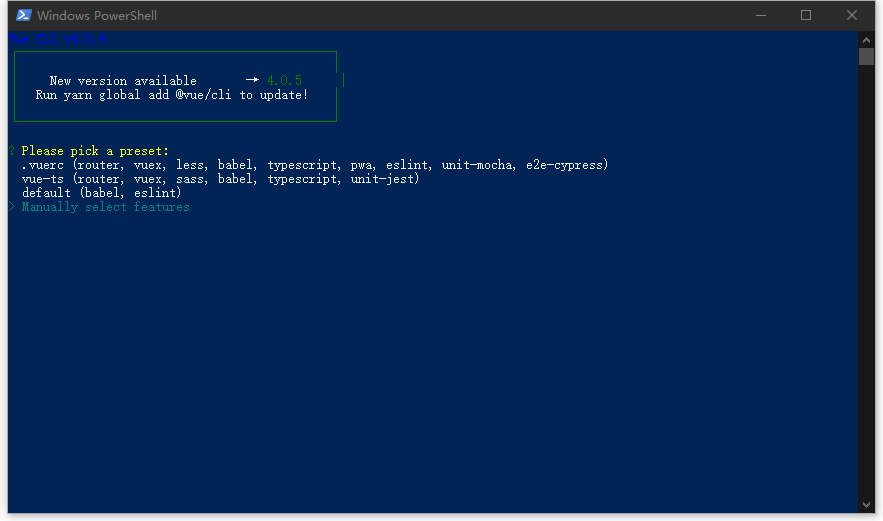
选择特性，确保把Babel和TypeScript选上
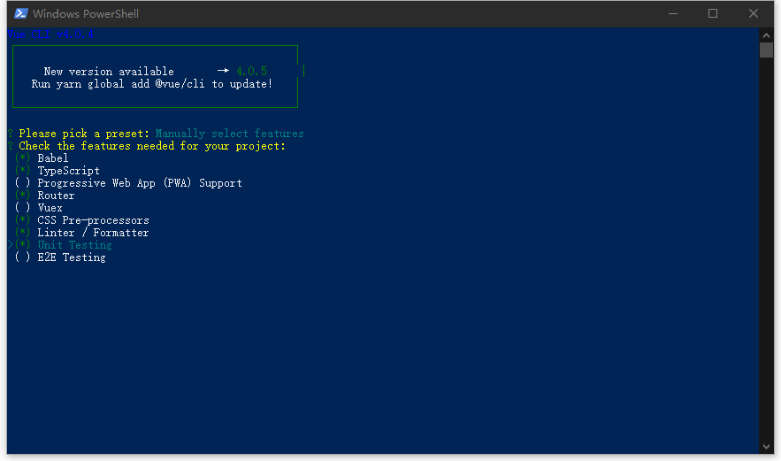
是否使用class风格的组件语法（记住这里）？选择否
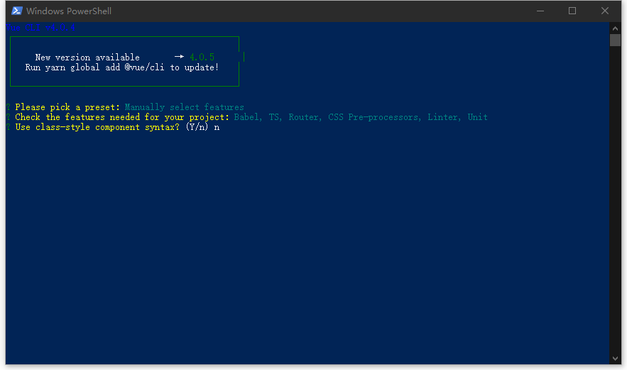
是否将Babel与TypeScript一起使用？选择是（有利于现代模式开发、自主选择需要的polyfills、和转译TSX语法）
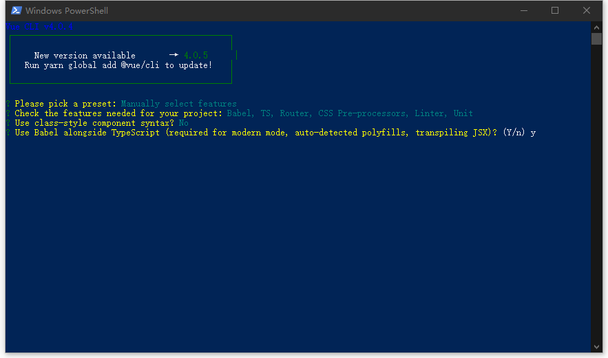
是否选择history路由模式，随意，这里选择是
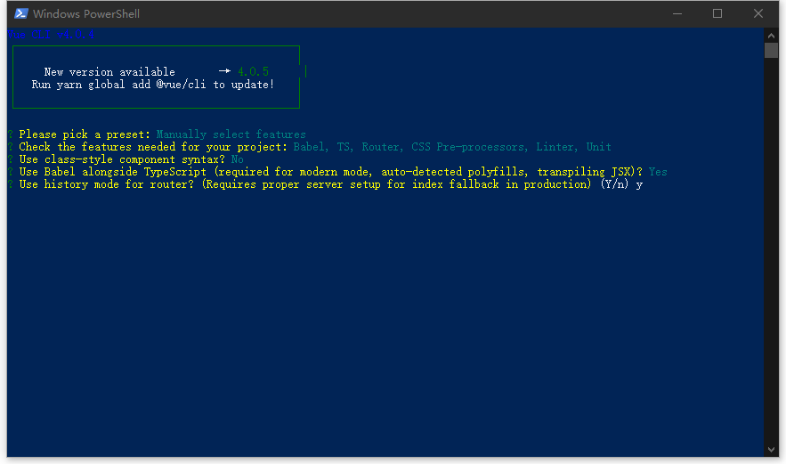
选择css语言预处理器，这里选第一个
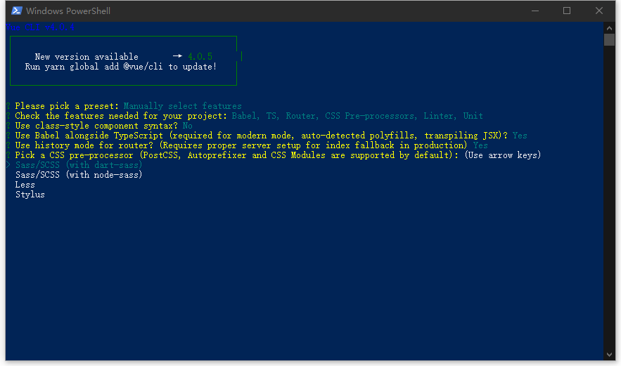
选择语言检查工具，这里选择第二个，Eslint + Airbnb规范。为什么不选用TSLint？因为早在今年年初TypeScript就已经宣布将ESLint作为代码检查的工具并逐渐放弃对TSLint的维护了。
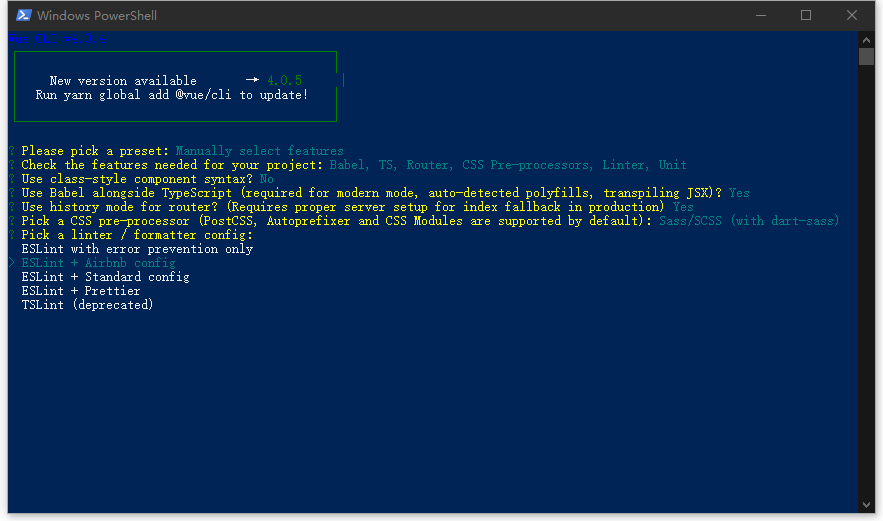
选择在什么时候Lint一下代码，建议两个都选上，一个是指在保存文件后立即执行检查，另一个时在提交代码前检查，确保提交的代码风格跟期望的风格保持一致。
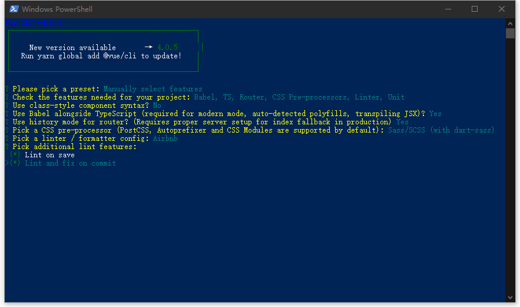
选择单元测试方案，根据自己或团队的喜好选择
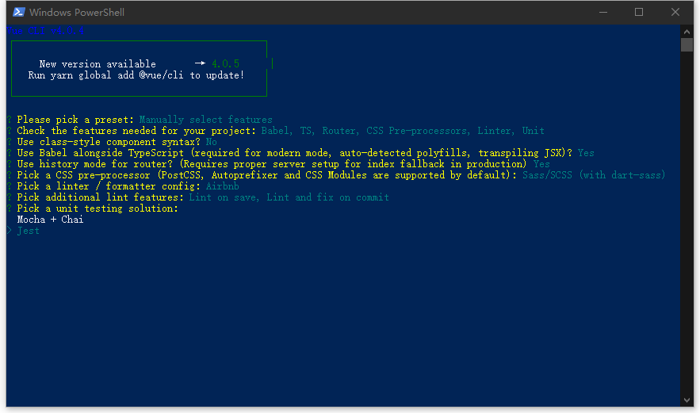
如何保存各种插件的配置方案？第一个时独立在各种config文件中，第二个是以JSON格式保存在package.json中，建议选第一个
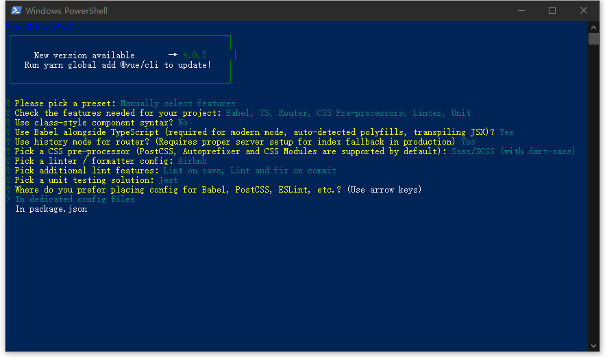
是否保存当前项目的特性作为预设？随意随意
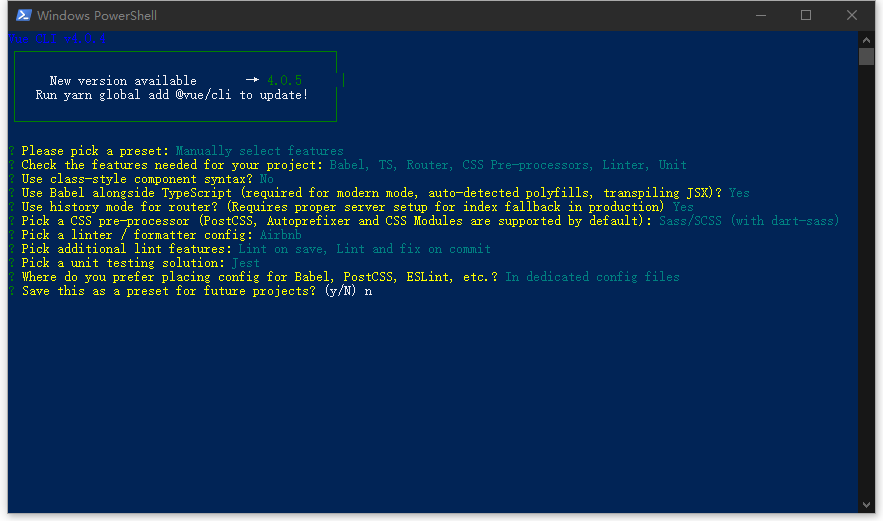
OK，项目开始初始化…
初始化完成后进入项目
cd vue-ts-demo
# 运行
yarn serve
项目目录解析
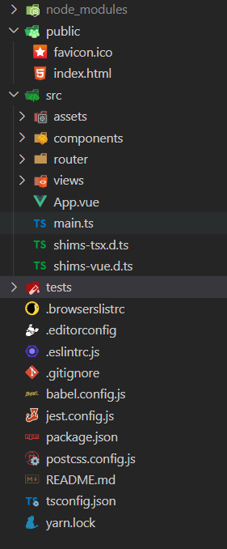
这里有三个值得注意的文件，shims-tsx.d.ts、shims-vue.d.ts和tsconfig.json，其中:
shims-tsx.d.ts允许你使用.tsx结尾的文件，用来在Vue项目中使用tsx语法。tsx语法就是jsx语法的ts版本。shims-vue.d.ts默认情况下，Ts不支持导入.vue文件，这个文件让Ts识别出.vue文件并让其按照VueConstructor<Vue>的形式来处理。tsconfig.json保存的是Ts编译器的配置，通过修改其项来达到想要的效果。Ts编译器选项文档
然后看看HelloWorld.vue文件：
<template>
<div class="hello">
</div>
</template>
<script lang="ts">
import Vue from 'vue';
export default Vue.extend({
name: 'HelloWorld',
props: {
msg: String,
},
});
</script>
<!-- Add "scoped" attribute to limit CSS to this component only -->
<style scoped lang="scss">
</style>
该组件的写法与常见的写法不同，Vue.extend()的形式，这是为了支持TS。Vue从2.5版本后对Ts有了更好的支持，从官方文档我们可以看到有两种使用TS编写组件的方法，一个是使用Vue.component或Vue.extend定义组件：
import Vue from 'vue'
const Component = Vue.extend({
// 类型推断已启用
})
cosnt Component = Vue.component('myComponent',{
// 类型推断已启用
})
const Component = {
// 这里不会有类型推断，
// 因为TypeScript不能确认这是Vue组件的选项
}
另一种是基于类的 Vue 组件
import Vue from 'vue'
import Component from 'vue-class-component'
// @Component 修饰符注明了此类为一个 Vue 组件
@Component({
// 所有的组件选项都可以放在这里
template: '<button @click="onClick">Click!</button>'
})
export default class MyComponent extends Vue {
// 初始数据可以直接声明为实例的属性
message: string = 'Hello!'
// 组件方法也可以直接声明为实例的方法
onClick (): void {
window.alert(this.message)
}
}
用以上两种方式便能够在.vue中使用Ts语法来编写组件了。而其中两者的区别是：前者基本上无学习成本，直接在现有的写法上结合TS语法即可，而后者则需要对class即类有一定的了解。
vue-class-component
官方文档中描述基于类的 Vue 组件时，引用了vue-class-component这样的一个插件，简单来说此插件就是用来支持JS/TS以class风格的组件语法（Class API）来编写，参考github用法简单总结如下：
methods可以直接声明为类成员的methods。- 可以将
computed属性声明为类属性访问器，换句白话说，computed属性可以直接通过get来获得。 - 初始化的
data可以直接声明为类的属性。 render、hooks可以直接声明为类的方法，但不能够在实例中直接调用他们。声明自定义的methods或data时应避免使用render、hooks中已有名称，避免冲突。- 对于其它的所有选项都可以放在
@Component装饰器里。
使用TS+vue-class-component编写的例子
<template>
<div>
<input v-model="msg">
<p>prop: {{ propMessage }}</p>
<p>msg: {{ msg }}</p>
<p>helloMsg: {{ helloMsg }}</p>
<p>computed msg: {{ computedMsg }}</p>
<Hello ref="helloComponent" />
<World />
<p>
<button @click="greet">Greet</button>
</p>
<p>
Clicked: {{ count }} times
<button @click="increment">+</button>
</p>
</div>
</template>
<script lang="ts">
import Vue from 'vue'
import Component from '../../lib/index'
import Hello from './components/Hello.vue'
import World from './components/World'
import { mapState, mapMutations } from 'vuex'
// We declare the props separately
// to make props types inferable.
const AppProps = Vue.extend({
props: {
propMessage: String
}
})
@Component({
components: {
Hello,
World
},
// Vuex's component binding helper can use here
computed: mapState([
'count'
]),
methods: mapMutations([
'increment'
])
})
export default class App extends AppProps {
// inital data
msg: number = 123
// use prop values for initial data
helloMsg: string = 'Hello, ' + this.propMessage
// annotate refs type
$refs!: {
helloComponent: Hello
}
// additional declaration is needed
// when you declare some properties in `Component` decorator
count!: number
increment!: () => void
// lifecycle hook
mounted () {
this.greet()
}
// computed
get computedMsg () {
return 'computed ' + this.msg
}
// method
greet () {
alert('greeting: ' + this.msg)
this.$refs.helloComponent.sayHello()
}
// direct dispatch example
incrementIfOdd () {
this.$store.dispatch('incrementIfOdd')
}
}
</script>
以上写法看起来很友好，但是缺点还是挺明显的。一来是实现太绕，对于TS的类型推导系统不太友好，代码的压缩打包也需要额外的性能开销，其中的命名空间冲突也是一个问题，再加上Decorators提案的不稳定性，无论怎么看Class API都不是实现拥抱TypeScript的最佳路线。所以今年6月份的Vue分享大会上，官方宣布在今后的Vue3.0中将会撤销Class API的写法，采用Function-based API的路线。
Vue.extend
重新回到HelloWorld.vue组件，由于前面选择了不使用Class API的风格来编写组件，所以采用了官方的第一种方法：使用Vue.component或Vue.extend定义组件，针对HelloWorld组件稍加改造:
<template>
<div class="hello">
</div>
</template>
<script lang="ts">
import Vue from 'vue';
export default Vue.extend({
name: 'HelloWorld',
props: {
message: {
type: Object,
},
},
mounted() {
console.log(this.message);
},
});
</script>
<style scoped lang="scss"></style>
对于Props以下这样的方法编写对JS来说是没有问题的，但是对于TS就有点不足了，我们无法从ide中获得更多关于message的信息，其中包含什么属性。而TS会把它当作any类型，
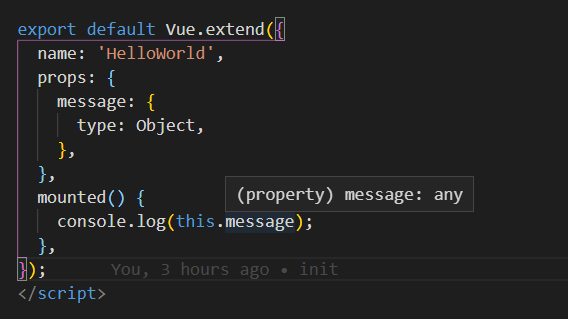
这不符合TS静态类型的要求。所以需要给message添加类型注释，并给它断言：
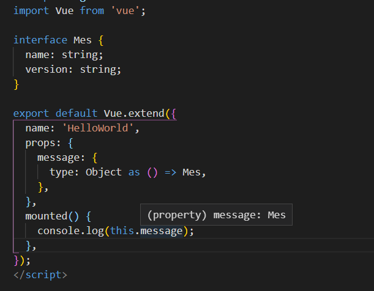
如此一来，内部访问该属性时就能得到相关提示了
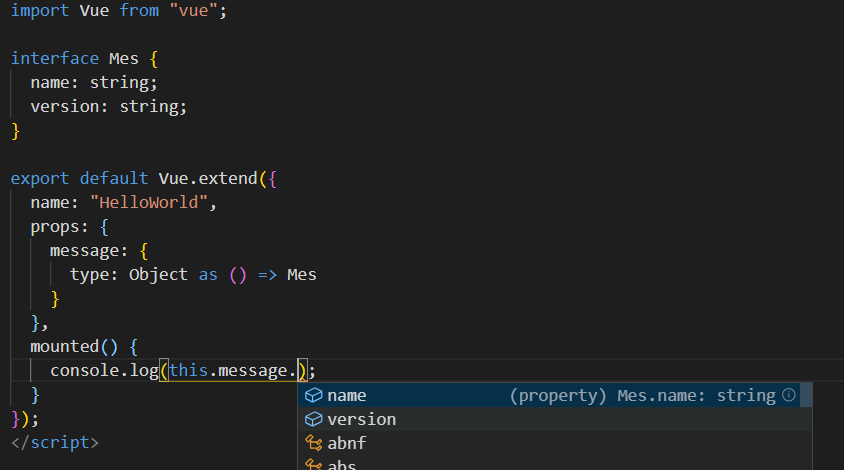
如果想在Vue.extend中想要使用mixins，很遗憾，TS并不能推断中mixins里的类型。参见这里
// mixin.vue
export default Vue.extend({
data () {
return {
value: '123'
}
}
})
// app.vue
export default Vue.extend({
mixins: [Mixin],
created () {
this.value // error, testValue 不存在
}
})
所以无论何种方法来编写vue组件，都有它致命的缺点，现阶段的vue2.x确实不太适宜使用TS来编写，原因点这里，这部分将会在Vue3.0中得到较好的改善。
代码检查格式化
即使工程体验不太好，拿来做基本熟悉练习还是不错的。笔者用的是VSCodeIDE，能通过插件来实现根据eslint的风格配置自动格式化代码，需要的安装插件是ESLint、Prettier和Vetur，经过实践验证，针对TS+Vue的推荐配置如下:
// setting.json
{
"prettier": {
"semi": false,
"singleQuote": true
},
"prettier.printWidth": 80,
"vetur.format.defaultFormatter.js": "prettier-eslint",
"vetur.format.defaultFormatter.ts": "vscode-typescript",
"editor.quickSuggestions": {
"strings": true
},
"editor.tabSize": 2,
"eslint.autoFixOnSave": true,
"eslint.validate": [
"javascript",
"javascriptreact",
"html",
{
"language": "vue",
"autoFix": true
},
{
"language": "html",
"autoFix": true
},
{
"language": "typescript",
"autoFix": true
}
]
}
最后就可以愉快的捣鼓了